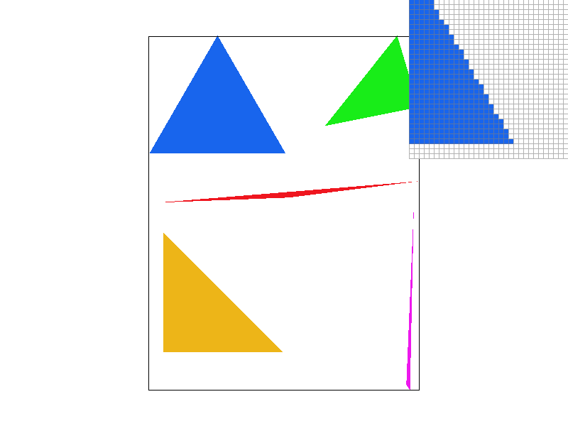
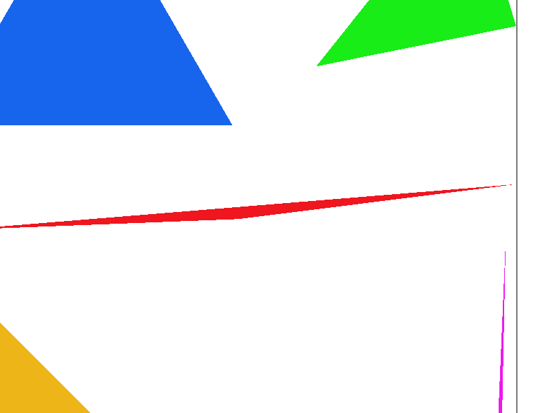
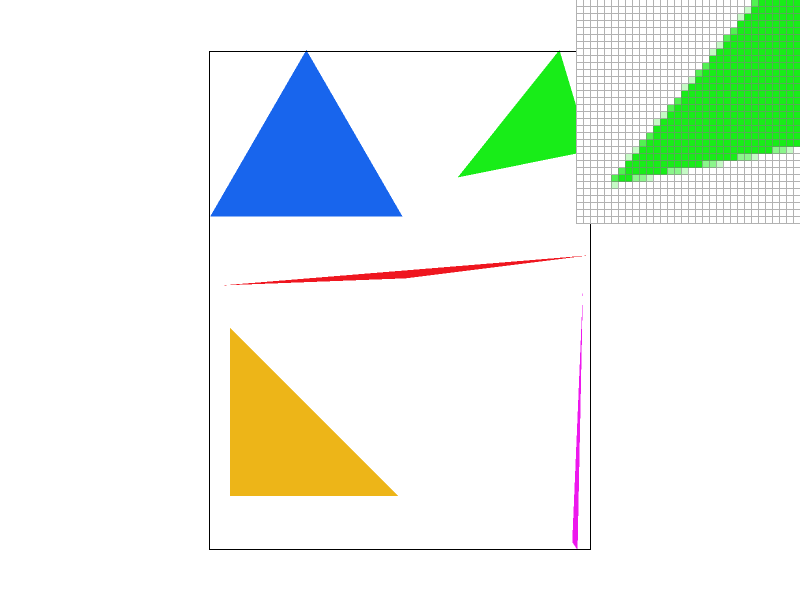
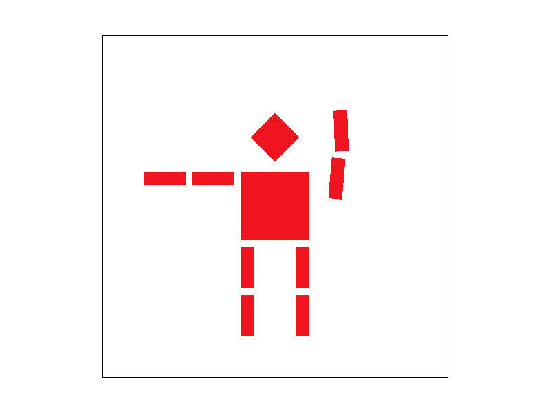
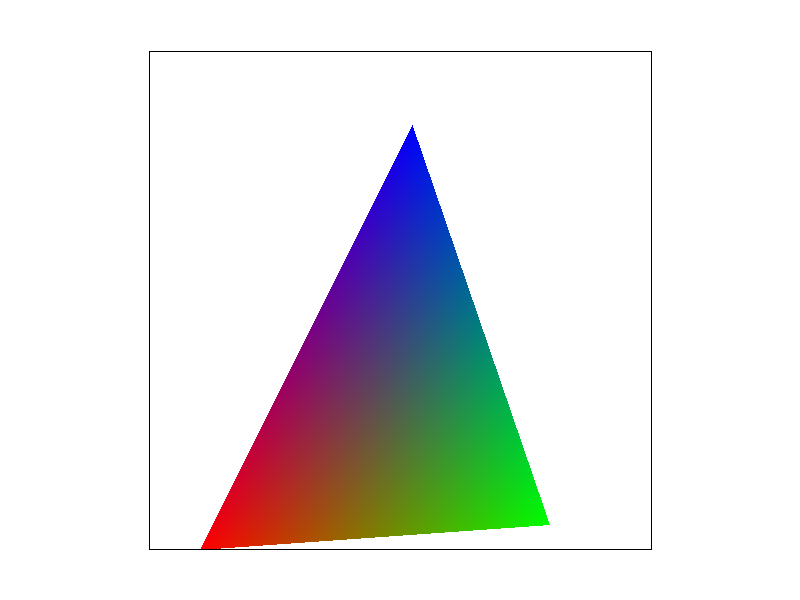
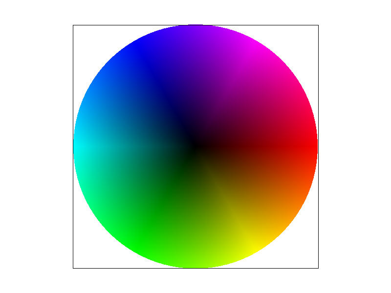
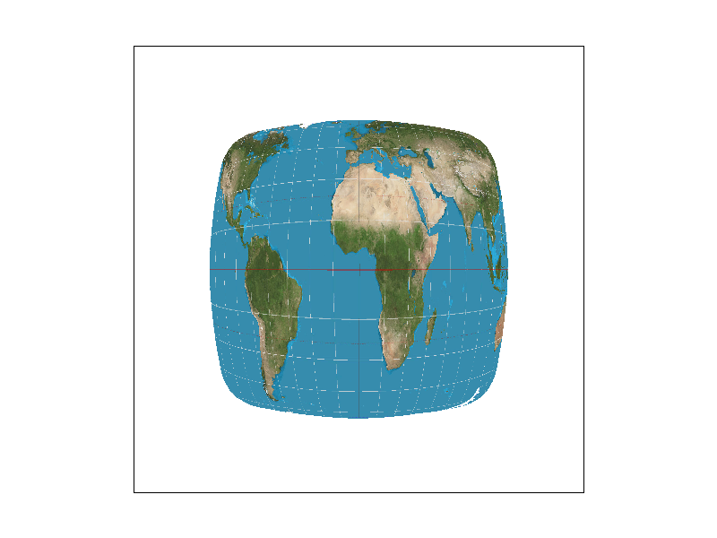
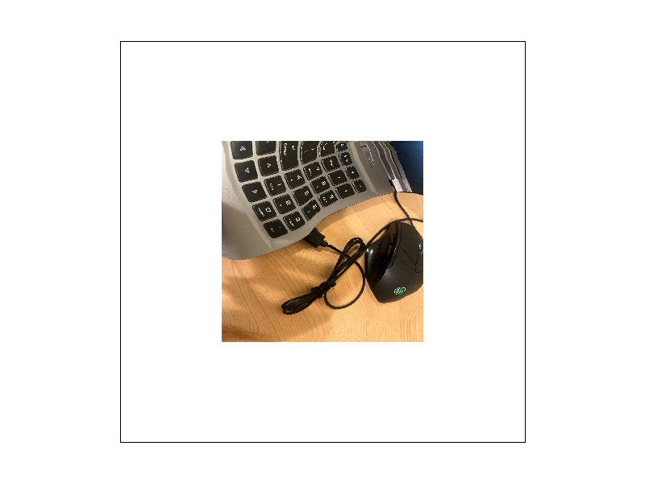
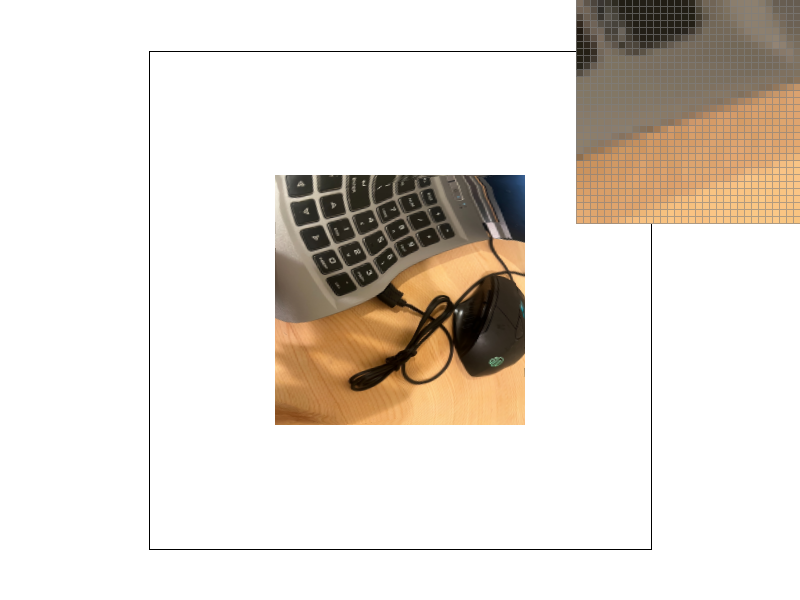

CS184/284A Spring 2026 Homework 1 Write-Up
Link to webpage: https://cal-cs184-student.github.io/hw-webpages-Rin-Kagamine/hw1/
Link to GitHub website repository: https://github.com/cal-cs184-student/hw-webpages-Rin-Kagamine
Link to GitHub code repository: https://github.com/cal-cs184-student/hw1-rasterizer-oliveira

Overview
In this homework, I implemented a software rasterizer from scratch. I built triangle rasterization using edge tests, added supersampling for antialiasing, implemented barycentric interpolation for smooth vertex colors, and added texture mapping with both nearest/bilinear pixel sampling and mipmap-based level sampling.
My biggest takeaway was seeing signal processing ideas show up in rendering, and getting more comfortable with them by implementing everything end to end. Supersampling acts like a low-pass filter on geometry edges, and mipmaps stabilize minified textures by matching the sampling resolution to the pixel footprint, which removes moire and shimmering in practice.
Task 1: Drawing Single-Color Triangles
First, please note that my code for Task 1 is in src/rasterizer__Task1.cpp.
For triangle rasterization, I first compute an axis-aligned bounding box of the triangle in screen space and clamp it to the framebuffer.
Then, for each pixel inside that box, I test the pixel center at (x+0.5, y+0.5) using edge functions (signed cross products).
If the three edge tests are all non-negative or all non-positive, the sample is inside the triangle (including boundaries), so I call
fill_pixel(x, y, color). This also works for both clockwise and counter-clockwise vertex order.
A naive approach would be to test every pixel on the entire framebuffer for every triangle. By restricting work to the triangle's bounding box, it skips a large fraction of pixels that are outside the bounding box. Within the bounding box, the method performs a constant amount of work per pixel (three edge function evaluations), so the runtime is proportional to the bounding box area.(I implemented a faster scanline method to skip many pixels inside the bounding box, which I will discuss later.)

Extra Credit: Faster rasterization (scanline)
As an optimization, I also implemented a scanline span-fill version in src/rasterizer__Task1.cpp.
I switch between the bounding-box method and the scanline method using the compile-time flag USE_SCANLINE_FAST.
For each scanline row y, I compute the intersections between the triangle edges and the horizontal line at y+0.5,
take the leftmost and rightmost intersection, and then fill all pixels whose centers lie between them.
This avoids doing an inside-test for every pixel in the bounding box and instead writes contiguous spans of pixels.
| Method | Avg svg.draw time (ms, 60 redraws) |
|---|---|
| Bounding box + edge tests | 0.272 |
| Scanline span fill | 0.078 |
Timing was measured in DrawRend::redraw() by wrapping svg.draw(...) with a high-resolution clock and printing the average
over 60 redraws. Both measurements used the same SVG file and view settings.
Task 2: Antialiasing by Supersampling
Tasks 2 to 6 are implemented in my main rasterizer implementation (the supersampling version), while Task 1 baseline code is in src/rasterizer__Task1.cpp.
For supersampling antialiasing, I changed the rasterizer so that it no longer writes one color per pixel directly to the final RGB framebuffer.
Instead, I store sample_rate subpixel samples per pixel in a separate sample_buffer and only convert to the final
framebuffer at the end by averaging.
Why it works: From a signal processing perspective, sharp triangle boundaries are high-frequency signals. Point sampling at a standard resolution falls below the Nyquist rate, causing aliasing (jaggies). Supersampling acts as a box low-pass filter: by taking multiple subpixel samples and averaging them down, we filter out frequencies higher than the pixel grid can represent, smoothing out the harsh geometric transitions.
The sampling pattern is a uniform grid inside each pixel.
Let n = sqrt(sample_rate). For each output pixel (x, y), I sample at n × n locations:
(x + (i+0.5)/n, y + (j+0.5)/n).
For triangles, I run the same point-in-triangle test at each subpixel sample and write the triangle color only to the covered subsamples.
This effectively estimates the triangle's coverage within a pixel, so edge pixels become partially colored instead of flipping
hard between inside/outside.
I organized sample_buffer in a pixel-major layout with size width * height * sample_rate.
All subsamples of pixel (x, y) are stored contiguously starting at
base = (y * width + x) * sample_rate.
At the end of rendering, resolve_to_framebuffer() averages the sample_rate colors for each pixel and writes an 8-bit RGB value to
rgb_framebuffer_target.
Points and lines are not antialiased in this homework, but they still need to end up in the supersample buffer.
To keep them working (e.g., the black rectangle border in test4.svg), I updated fill_pixel() to fill all subsamples
of that pixel with the same color.
sample_rate = 1, the triangle edges look like hard stair-steps because each pixel is fully on/off.
At sample_rate = 4, edge pixels start showing intermediate coverage (some subsamples covered, some not), so the transition looks less jumpy.
At sample_rate = 16, the zoomed region shows a much smoother coverage gradient, and thin features (like the slanted red line) look more stable.


Task 3: Transforms
For Task 3, I implemented the three SVG transforms in transforms.cpp: translate, scale, and rotate.
They are represented as 3×3 matrices in homogeneous coordinates, so a 2D point (x, y) can be treated as (x, y, 1) and
transformed by a single matrix multiply. This also makes hierarchical transforms easy, since nested <g> transforms compose by
matrix multiplication. After implementing these, svg/transforms/robot.svg rendered correctly.
For the write-up deliverable, I made an edited version of the robot pose and saved it as docs/my_robot.svg.
I wanted cubeman to look like he is raising his right hand. The robot is built from multiple grouped parts, so I modified only the
right-arm group by adding a rotate(...) to its transform attribute. Since the arm group is already translated to the shoulder
location, the rotation naturally happens around the shoulder joint, which makes it easy to change the pose without touching the underlying
polygon geometry.
S hotkey)
Task 4: Barycentric coordinates
For this task, I implemented RasterizerImp::rasterize_interpolated_color_triangle(...) to render triangles whose vertex colors are smoothly
blended across the triangle using barycentric interpolation. After this, svg/basic/test7.svg shows the expected color wheel.
Barycentric coordinates describe any point p inside a triangle as a weighted combination of its three vertices:
p = w0*v0 + w1*v1 + w2*v2 with w0 + w1 + w2 = 1. The weights reflect the point’s relative influence from each vertex:
at a vertex one weight becomes 1, on an edge one weight becomes 0, and inside the triangle all three weights smoothly vary.
The key property is that the same weights can linearly interpolate per-vertex attributes. So I compute (w0,w1,w2) for each covered sample and
set the sample color as w0*c0 + w1*c1 + w2*c2, which produces smooth gradients.
S hotkey.)

S hotkey.)

Task 5: "Pixel sampling" for texture mapping
In Task 5, I implemented RasterizerImp::rasterize_textured_triangle(...) to render textured triangles. Each vertex provides a texture
coordinate (u, v), and for every covered sample inside the triangle I first compute barycentric weights and use them to interpolate
a continuous (u, v) value. The remaining question is how to convert that continuous coordinate into a color from a discrete texture image,
which is the pixel sampling step.
I implemented the two pixel sampling methods in Texture::sample_nearest and Texture::sample_bilinear, and selected between them
based on the GUI toggle psm (key P). For the comparisons in this task, I set the GUI lsm to L_ZERO (mip level 0) so that the only change is the pixel sampling method (psm).
Nearest sampling picks the single closest texel to the query (u, v). Bilinear sampling uses the four neighboring texels around the query,
then linearly interpolates first in x and then in y, producing a smoother result with fewer sudden jumps between texels.
|
 |
|
|
|
|
Overall, bilinear looks better when the texture contains high-frequency details (fine lines, small text, sharp boundaries) or when the texture is
minified/rotated, because the nearest method can jump abruptly between texels. Increasing sample_rate helps reduce aliasing by averaging
more samples per pixel, so the gap between methods becomes smaller at 16 spp, but bilinear still produces more stable and less blocky texture
transitions, especially in the high-frequency regions.
Task 6: "Level Sampling" with mipmaps for texture mapping
In Task 6, I added mipmap level sampling to reduce aliasing when a texture is minified. Instead of always sampling the full-resolution image, the renderer chooses an appropriate mip level based on the local footprint of one screen pixel in texture space. This makes zoomed-out textures much more stable (less shimmering / moire).
Implementation overview:
In RasterizerImp::rasterize_textured_triangle(...), for each sample location (xx, yy) I compute the UV coordinate at
(xx, yy), (xx+1, yy), and (xx, yy+1) using barycentric interpolation, store them as
sp.p_uv, sp.p_dx_uv, sp.p_dy_uv, and pass a SampleParams sp (with psm and lsm)
into Texture::sample(sp).
In Texture::get_level, I compute finite differences
duv_dx = sp.p_dx_uv - sp.p_uv and duv_dy = sp.p_dy_uv - sp.p_uv, scale them by the base texture
width/height to convert to texel units, compute the footprint lengths in x and y, take the larger one, and return
level = log2(footprint) (clamped to valid mip levels).
In Texture::sample:
when lsm == L_ZERO I always sample mip level 0;
when lsm == L_NEAREST I round to the nearest integer level and sample that level;
when lsm == L_LINEAR I sample the two adjacent mip levels and linearly blend them by the fractional part.
The psm toggle still controls within-level sampling (nearest vs bilinear), so all combinations of
psm in [P_NEAREST, P_LINEAR] and lsm in [L_ZERO, L_NEAREST, L_LINEAR] are supported.
Tradeoffs (pixel sampling vs level sampling vs sample_rate):
-
Speed:
P_NEARESTis fastest (1 texel lookup per sample);P_LINEARis slower because it blends 4 neighboring texels. For level sampling,L_ZEROuses one mip level, whileL_LINEARblends two mip levels; withP_LINEARthis becomes trilinear filtering (effectively 8 texel lookups per sample), so it is the slowest in general. -
Memory usage:
Supersampling increases memory the most: my
sample_bufferstoreswidth * height * sample_ratecolors, so memory grows linearly withsample_rate. Mipmapping increases texture storage by a constant factor: a full mip chain costs1 + 1/4 + 1/16 + ... = 4/3of the base level, i.e. about33%extra texture memory. (Changinglsmchanges which mip levels are sampled, but the mip levels still exist once generated.) Pixel sampling (P_NEARESTvsP_LINEAR) does not meaningfully change memory usage. -
Antialiasing power:
Increasing
sample_ratemainly reduces geometric aliasing (triangle edges/jaggies) by better estimating coverage. Level sampling mainly reduces texture minification aliasing:L_ZEROshimmers/moire under minification,L_NEARESTis more stable but may show discrete level transitions, andL_LINEARis most stable (smoothly blends between mip levels). Within a mip level,P_LINEARfurther reduces blockiness compared toP_NEAREST.
Below are four renders of my own PNG texture using the required combinations. All images were saved using the GUI S hotkey.
L_ZERO + P_NEAREST, L_ZERO + P_LINEAR,
L_NEAREST + P_NEAREST, L_NEAREST + P_LINEAR.
|
 |
|

|
 |
What I observed in these four renders:
In the zoomed inspector region, L_ZERO + P_NEAREST looks the most blocky: the boundary becomes staircase-like and small details snap between texels.
Switching to L_ZERO + P_LINEAR makes the transition smoother (less abrupt texel jumps), but the minified region still looks unstable because it is still sampling from mip level 0.
With L_NEAREST, the renderer chooses a lower-resolution mip level that better matches the pixel footprint, so the zoomed region becomes noticeably more stable and the aliasing is reduced.
Finally, L_NEAREST + P_LINEAR is the smoothest in my tests: it keeps transitions soft and reduces remaining discontinuities, at the cost of slightly more blur in fine details.
| Setting (Berkeley seal) | Avg svg.draw time (ms, 60 redraws) |
|---|---|
P_NEAREST + L_ZERO |
3.8 |
P_LINEAR + L_ZERO |
4.3 |
P_NEAREST + L_NEAREST |
4.1 |
P_LINEAR + L_NEAREST |
4.6 |
These timings were measured by printing the average time of svg.draw(...) over 60 redraws.
In my measurements on the Berkeley seal view, L_NEAREST was slightly slower than L_ZERO.
A likely reason is that L_NEAREST adds mip level selection (estimating the pixel footprint in texture space and choosing a mip level) before doing the within-level pixel sampling, while L_ZERO always samples mip level 0.
The exact gap depends on the view and texture content, but the overall trend matches the extra work needed for level selection.